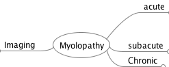

Myolopathy

Myolopathy
Imaging
acute
vascular
Traumatic
subacute
Inflamatory
Autoimune
MS
NMO
Characteristic
Long lessions
Nutrophyls and eosinophils
Rapid attack
Treatment
PLEX plus steroids
Anti-MOG
Sarcoidosis
Characteristics
Image look worse than clinic
Limphocitic pleositosis
Treatment
Steroids for 6 month
Alternative, infliximab
sjogren syndrome
Infection
HIV
Neoplasm
Local
Meta
Paraneo
Vascular
Espino dural AV fistula
Get worse with corticoids
Chronic
Cervical stenosis
Posterior ligament or flavum
Can be a dynamic compression
Myeloradiculopathy